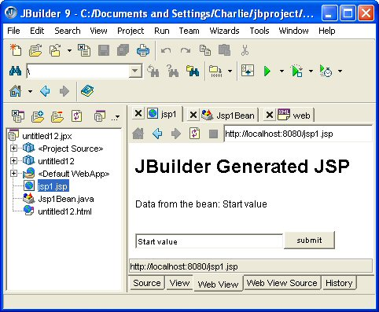

Copyright (c) 2003 by Charlie Calvert
In this article you will learn how to use JBuilder 9 to create a simple JavaServer Page (JSP) application. JSP is a Java based technology that allows you to create web applications. JSP applications separate the presentation and business logic layers of your application. In other words, they employ a model-view-controller architecture where the model is implemented in Java and the view is implemented in a form of HTML supplimented by a few simple JSP specific tags.
This article is designed to show how to create simple JavaServer Pages. Subsequent articles will explore the subject in more depth.
The text begins with a quick start section that steps you through the process of creating a JSP application using the JBuilder wizard. This quick start section ends with a few sentences describing how to trouble shoot the most likely errors which might have occurred. These errors are likely to be related to the set up of a Tomcat server.
The middle of the article contains a brief overview of the JavaServer Pages technology. Finally, I will show you how to modify the default JBuilder JSP application in a few simple ways so that you can begin to make it do what you want.
Open JBuilder and create a new project by choosing File | New Project. The dialog containing the JBuilder New Project Wizard is shown in Figure 1. Click finish on the first of the three pages of the wizard to accept all the defaults.
Choose File | New from the JBuilder menu. Turn to the Web page in the Object Gallery and select JavaServer Page, as shown in Figure 2. This option should be available in JBuilder Professional or above. There are five pages in the JSP wizard. For now, just accept all the defaults and click finish on the first page, as shown in Figure 3.
You have created a simple, but valid, JavaServer Page. To run the application in JBuilder, right click on jsp1.jsp in the project pane and choose Web run using jsp1 from the pop up menu, as shown in Figure 4. If all went well, your application should launch inside the JBuilder content pane, as shown in Figure 5.
Figure 1: Click finish on this page to accept all the defaults when creating a new project.
Figure 02: Selecting the JavaServer Page from the Object Gallery.
Figure 3: Click finish on the first of the five pages of the JSP wizard to accept all the defaults.
Figure 4: Running your bean from inside JBuilder.
Figure 5: Running a JSP inside of JBuilder. Note that the tab at the bottom of the IDE says Tomcat 4.0 and the text under content pane says http://localhost:8080/jsp1.jsp.
Everything I've shown you so far is fairly straight forward. The only thing that might have gone wrong is if you did not have the Tomcat server set up correctly. Tomcat is one of several servers available which support JavaServer Pages and Java Servlets. It is a free and well implemented server produced by the Jakarta group. It can be found at http://jakarta.apache.org/tomcat/index.html.
The regular JBuilder 9 install should have place copies of Tomcat 3.3, 4.0 and 4.1 in a directory called JBuilder9/thirdparty, where JBuilder9 is the name of the directory where you installed JBuilder. For instance, on my system the path to these files is c:\bin\jb9\thirdparty, as shown in Figure 6.
Assuming that these files are correctly installed, you should next choose Tools | Configure Servers and ensure that Tomcat is correctly configured. As shown in Figure 7, the home directory field should be set to the location of the Tomcat JDK, which on my systems is C:\bin\jb9\thirdparty\jakarta-tomcat-4.0.6-LE-jdk14. The Main Class field should be set to: org.apache.catalina.startup.Bootstrap.
Figure 6: A directory listing showing the Tomcat servers automatically installed with JBuilder.
Figure 7: The JBuilder Configure Servers dialog with Tomcat Server 4.0 selected. Note the reference to the main class: org.apache.catalina.startup.Bootstrap, and to the home directory, which in my case is: C:\bin\jb9\thirdparty\jakarta-tomcat-4.0.6-LE-jdk14.
JBuilder is designed to work only with a certain predefined set of servers. These servers are listed on the left side of the dialog shown in Figure 7. You can install your own copies of any of these servers, and use the Configure Servers dialog to point JBuilder toward them.
Most of the other problems you are likely to have when creating a JBuilder JSP would involve inserting incorrect code. In this example, however, JBuilder generated all the code for you automatically, and so it should be correct. As a result, I won't discuss any syntactic problems that might arise in your code.
JBuilder generated several chunks of code for you when you ran the wizard
Listings 1 and 2 show the source code for the two main files in this simple JSP application. They will be explained further in the text which appears below.
<html> <head> <title> jsp1 </title> </head> <jsp:useBean id="jsp1BeanId" scope="session" class="untitled12.Jsp1Bean" /> <jsp:setProperty name="jsp1BeanId" property="*" /> <body bgcolor="#ffffff"> <h1> JBuilder Generated JSP </h1> </body> </html>
package untitled12;
public class Jsp1Bean
{
private String sample = "Start value";
//Access sample property
public String getSample()
{
return sample;
}
//Access sample property
public void setSample(String newValue)
{
if (newValue!=null)
{
sample = newValue;
}
}
}
When creating your JSP, you can focus primarily on the two files shown in Listings 1 and 2.. It is these files, and one's like them, that you will modify when creating your application. However, you need to understand that a third file, not listed above, will be generated generated behind the scenes in order to make your application complete. You will never need to edit, and will often not even need to look at, this third file. However, it is the key to the entire JSP technology. After you have compiled and run your JBuilder project, the generated file will appear in your project hierarchy, in this location: classes\Generated Source\.jsp\.default.
I have implied several times in this section that there is connection between the JSP and Servlet technologies. It happens that a JSP is simply a particular kind of Servlet. Why then do I not begin by talking about Servlets first, and then start talking about Java Server Pages? It turns out that JavaServer Pages are much simpler to create than Java Servlets. In fact, JavaServer Pages can be seen as nothing more than a short cut to creating a Java Servlet. JSPs are designed to be a simple technique that makes it easy to create Servlets. It therefore makes sense to study JSP basics first, and then to move on to an understanding of Servlets.
Servlets are complicated not because they are difficult to build. In fact, Servlets are quite easy to create. However, Servlets have a tendency to encourage developers to mix their HTML and Java source code in a single file in a series of println statements:
out.println("<HTML><BODY><P>Data</P></BODY></HTML>");
Code of this type can be quite difficult to read if you are working with large amounts of HTML. Furthermore, you cannot easily modify the HTML without changing the source code of your servlet. JSPs are designed to rectify this entire problem by employing a model-view architecture.
In a JSP, you separate your code into two types of files. On one side, you have HTML files like jsp1.jsp. On the other side, you have Java source code, like that found in Jsp1Bean.java. Behind the scenes, the Tomcat server will automatically generate a third file whenever you modify your source. This third file is true Java Servlet, and contains a mixture of Java source code and HTML. The whole point of the JSP architecture is to hide the details of this file from you.
In closing this section, I want to point out there is nothing in the JSP specification which prevents you from putting Java source code in your HTML based jsp file, nor from putting HTML in your Java based beans. The architecture is designed to encourage you to make a clean separation between your presentation layer and your program logic. However, it does not enforce this architecture through a set of immutable syntactical rules. I want to emphasize, however, that your success in working with this paradigm is in large part dependent on your willingness to keep your Java code in one place and your HTML code in another. If you give in to the temptation to mix the two, then you will be forfeiting a major benefit of this technology.
By this stage you should understand how to create a JSP with JBuilder, and you should have caught some glimpses of the general theory behind the JSP architecture. In future articles, I will expand on this short, general introduction to this extensive topic. To wrap up this article, let's modify the project slightly.
A modified version of the original JSP page is shown in Listing 3.
Listing 3: A single line has been added to the code shown in Listing 1. This single line of code prints out the value of the property called sample which is found in the Java bean shown in Listing 2.
<html>
<head>
<title>jsp1</title>
</head>
<jsp:useBean id="jsp1BeanId" scope="session" class="untitled36.Jsp1Bean"/>
<jsp:setProperty name="jsp1BeanId" property="*" />
<body bgcolor="#ffffff">
<h1>JBuilder Generated JSP foo</h1>
<p>Data from the bean: <jsp:getProperty name="jsp1BeanId" property="sample"/><p>
</body>
</html>
First notice the general structure of the file. The HTML, HEAD, BODY, and H1 tags are simple HTML rendered without modification. The first line that looks unusual is this one:
<jsp:useBean id="jsp1BeanId" scope="session" class="untitled36.Jsp1Bean"/>
This code uses a simple XML format to render a JSP tag. Notice the reference to the jsp namespace, and to the useBean tag: jsp:useBean. In this case the useBean tag has three attributes: id, scope and class. The class attribute specifies the name of the bean that you want to use. The scope attribute specifies the range over which this tag's definition will be available. In this particular case, the the definition is said to hold true across the entire session. Sessions will be defined in later articles in this series. Finally, the id attribute defines a means of referencing this object in other parts of your code. The id has much the same functionality here that an identifier or variable declaration would have in a standard programming language such as Java, Pascal or C. The end result of this statement is that we have an id called jsp1BeanId that references an instance of the Java bean shown in Listing 2.
After this modification, the application appears as it does in Figure 8. Notice the string in the middle of the output window that reads "Data from the bean: Start Value." The value before the colon was generated by the HTML in the presentation layer, and the value after the colon was generated by the Java code in the default bean generated by the JBuilder wizard.
Figure 8: The JSP now accesses the default property in the bean created by JBuilder when you ran the wizard. This property returns the string "Start Value."
Here is the part of the jsp page that retrieves the data from the bean: <jsp:getProperty name="jsp1BeanId" property="sample"/> Notice that this code is in XML format. A namespace called jsp is declared, and then there is a reference to the getProperty tag. In this instance, the tag supports two attributes called name and property. The name field specifies the name of the object we want to call, and the property field specifies the property on that object that we want to reference. The name of the object to be called is referenced via the id property of the jsp:useBean tag discussed above.
To understand this better, take a look at the Java bean itself, which is shown in Listing 2:
public class Jsp1Bean
{
private String sample = "Start value";
// code omitted here
}
Here you can see that Jsp1Bean has a single property called sample. If you look up at listing two, you will see that there are public getter and setter methods for accessing this property. By now you should be able to parse the getProperty tag: <jsp:getProperty name="jsp1BeanId" property="sample"/>. The code simply references the sample property of an instance of the Jsp1Bean class.
Let's add three more lines of code to our jsp file:
<form action="jsp1.jsp" method="post">
<input type="text" name="sample" value="<jsp:getProperty name="jsp1BeanId" property="sample"/>">
<input type="submit">
After adding this code, at run time the application appears as it does in Figures 9 and 10. The complete source for the modified jsp file is shown in Listing 4.

Figure 9: The JSP as it appears in the content pane when first run.
Figure 10: The JSP as it appears after the user has modified one of the fields of the Java Bean by typing in the input field. Note that the text above the submit button which accesses the sample property has been changed. The change occurred when the user pressed the submit button.
Listing 4: The modified source to the JSP.
<html> <head> <title> jsp1 </title> </head> <jsp:useBean id="jsp1BeanId" scope="session" class="untitled12.Jsp1Bean" /> <jsp:setProperty name="jsp1BeanId" property="*" /> <body bgcolor="#ffffff"> <h1>JBuilder Generated JSP</h1> <p>Data from the bean: <jsp:getProperty name="jsp1BeanId" property="sample"/><p> <form action="jsp1.jsp" method="post"> <input type="text" name="sample" value="<jsp:getProperty name="jsp1BeanId" property="sample"/>"> <input type="submit"> </body> </html>
The new code adds a form to the HTML file. The form references the page in which it appears: action="jsp1.jsp." In other words, a click on the submit button in the form will end up modifying this page, and not some other page. Included in the form are an input field and a submit button. Notice that the value for the input field is supplied by the sample property in our Java bean. Pressing the submit button changes that value.
In effect, the submit button completes our model-view architecture by adding a controller to it. The controller part of the model-view-controller architecture is the part that provides the communication between the model and view portions of the architecture. When the user clicks on the submit button that link is completed, and code inside the Java bean is called. This is a very simple example of how you can use an HTML file to tap into the logic supplied by Java application.
Please remember that the HTML will be on the client side, and the Java class will be back on the server. In effect, the relationship between the HTML and the Java server code is the same as that between an HTML file and a CGI application. In particular, there is normally going to be a noticeable delay while the information in the HTML file is sent back to the server, processed by the Java Servlet code, and sent back to the user in the form of a new HTML page. In that sense, this architecture is the same as that found in a CGI application. The advantages of this technology over CGI technology are two fold:
1) There is a very clean and intuited relationship between the HTML based JSP and the logic back on the server.
2) The code on the server is kept in memory at all times, so there is no overhead of the type one usually finds when launching an instance of a CGI application. A delay will occur, however, the very first time the application is accessed. At that time, the Tomcat server combines the JSP page and the beans on the server to generate the source for a Java Servlet. It then compiles the Servlet and loads it into memory. There it will stay until the source is modified or the server is shut down.
The end result is a very fast, very powerful, web application that is easy to build and at least potentially easy to maintain. That ease of maintenance is in large part dependent on the developers willingness to maintain a separation between the presentation and logic layers of the JSP.
This article has introduced the main concepts on which the JavaServer Pages architecture is based. It has also shown you how to use JBuilder to easily create a sample JavaServer Page.
A major focus of this article was to show you the basic syntax of a simple JSP application. While exploring that syntax, you learned that the JSP architecture is based on the Java Servlet technology.
Another primary focus of this article was to explain how the JSP technology supports the model-view-controller architecture. In particular, you have seen that a file with a jsp extension contains HTML and forms the presentation portion of your application. A second file, containing Java code, contains the logic for your application. Of course, a large web application will likely contain many HTML and Java files. However, the basic architecture on which those applications is based has been introduced in this article. Future articles in this series will focus on the many features found in a JSP or Servlet based application.
I will close with a warning. This article has given you just enough information to make you dangerous. Future articles will give you the information you need to correctly architect web applications that are robust and maintainable.